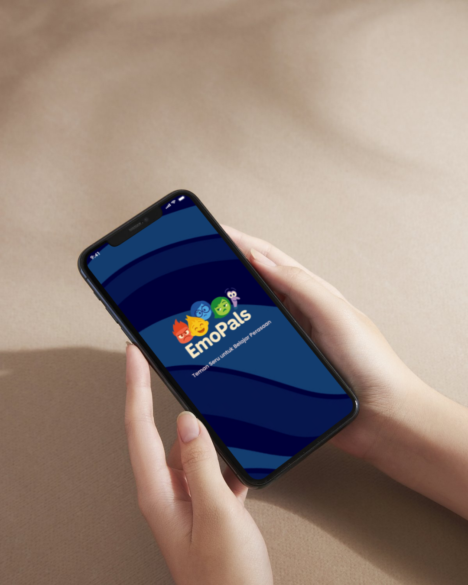
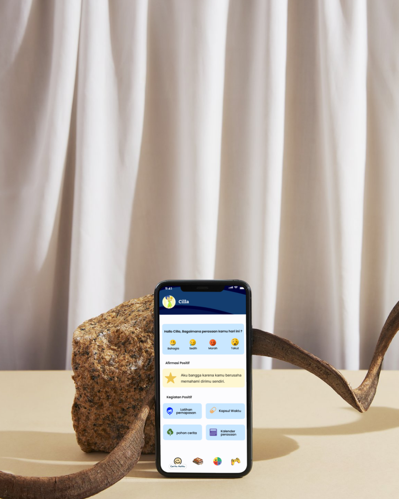
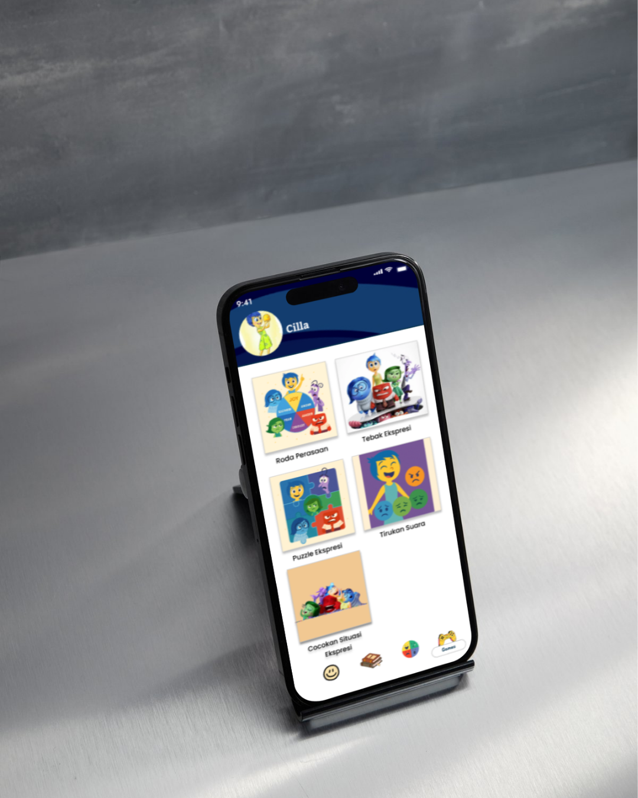
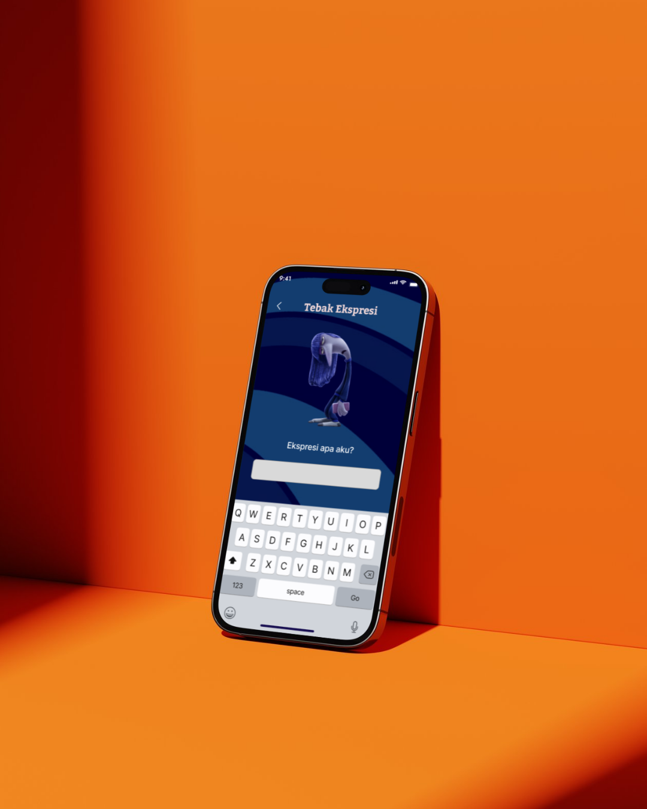

EmoPals merupakan aplikasi edukasi yang dirancang untuk membantu anak-anak dalam mengenal, memahami, dan mengekspresikan emosi mereka dengan cara yang menyenangkan dan interaktif. Aplikasi ini hadir sebagai teman belajar yang mendukung perkembangan kecerdasan emosional anak sejak dini melalui berbagai aktivitas yang menarik.
EmoPals menyediakan beberapa fitur utama seperti games interaktif, buku cerita edukatif, serta ruang ekspresi emosi. Melalui fitur permainan, anak-anak dapat belajar mengenali berbagai jenis emosi seperti senang, sedih, marah, dan takut dengan cara yang lebih mudah dipahami.



